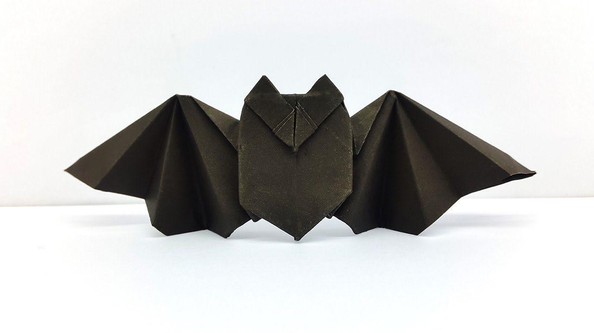

How to make a Bat.
Click on the below image for the instructions.

Interesting Facts about Bats.
- Bats can live more than 30 years and can fly at speeds of up to 60 mph.
- Bats can find their food in total darkness.
- Bats can eat up to 1,200 mosquitoes an hour.
How to make a Rabbit
Click on the below image for the instructions.
Interesting fact about Rabbits.
- A rabbit’s teeth never stop growing!
- Bunnies cannot vomit, so it is super important to feed them only healthy, fresh, appropriate food.
- Rabbits perform an athletic leap, known as a 'binky', when they're happy